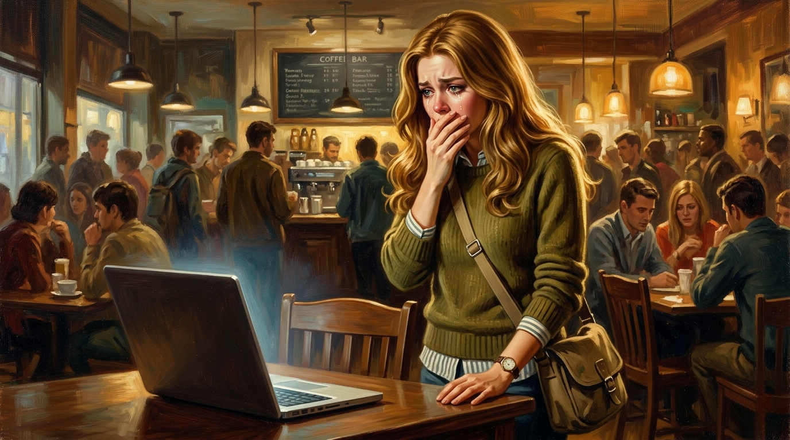

Wren Cade had chosen Grounds & Bounds specifically because it was not her dorm room.
Her dorm room had her laptop in it, and her laptop had her email open, and sitting there waiting for nothing to become something had started to feel like a specific kind of psychological damage she could avoid by leaving. So she'd left. She had a latte going cold on the table in front of her and a linguistics reading she'd opened and was not reading, and the low ambient noise of a Tuesday afternoon, and that was better. Marginally. She'd been here for forty minutes, had refreshed her email eleven times by actual count, and she was not thinking about it.
She was thinking about it constantly.
She'd been good at rush, that was the thing. Not fake-confident good but actually good, genuinely at ease in the way she hadn't expected to be. At Theta Chi’s first event she'd made a senior laugh with something she said and had felt, for about forty minutes, like someone whose last name was just her last name. That was all she'd wanted. A chapter. Sisters. People who knew her because she'd told them who she was, not because they'd looked her up.
But then, the rejections had started. Kappa Lambda Epsilon first. Then Gamma Nu. Then Pi Beta Rho and Alpha Delta Alpha both on Thursday, twenty minutes apart, and by that point she'd been running the same inventory over and over — every conversation, every event, every potentially wrong thing she'd said or worn or done — and coming up empty each time, because the problem was not anything she'd done. The problem had a shape she could feel without being able to name yet.
Brittany Haas had named it for her, on Friday morning, walking out of sociology. “How’s rush going? I keep hearing people talk about the chimp thing with your dad.” She'd made a vague gesture. “Anyway.”
Wren had said “fine, yeah” and walked back to her dorm.
She'd replayed it approximately forty times since then. The thing that kept snagging was the “anyway.” The breezy pivot, the total absence of malice. Brittany hadn't been trying to hurt her. She'd acknowledged an awkward thing in someone else's life the way you did before moving on to whatever you actually wanted to talk about. She'd probably forgotten it before she turned the corner.
Wren had thought about almost nothing else. Four days of cataloguing every conversation, every outfit, every potentially wrong thing she'd said or laughed at or failed to laugh at, and the whole time the answer had been sitting there. Not anything she'd done. Just: her father, a camera, and the specific expression on his face while he explained something the subcommittee hadn't wanted explained.
She'd known about the footage the way she knew about most things involving her father's company: present in the periphery, filed away, unopened. She'd seen the headline in September, watched approximately three minutes of the congressional coverage before closing the tab. Her father before the subcommittee, explaining the research value with the methodical patience he used when he believed the people across the table from him were being willfully obtuse. She'd thought, closing the tab: he could have just said he was sorry.
She understood, of course, that it wouldn't have been true.
The footage itself she'd never watched. Primates, a Cade Biotech lab, nothing outside regulatory guidelines. He'd been very clear about that. It didn't matter. Some images didn't need context to do their work. Campus groups organized. The student paper ran three pieces. The administration quietly declined to move forward with the Cade Biotech Research Wing.
That was September. Rush was October. The coordination of her rejections made a different kind of sense now, not because of anything she was, but because the Greek system ran on alumni relationships and reputational proximity, and the Cade name had become a liability so recently that the committees probably hadn't needed to discuss it. It had just been understood.
And then there was Zeta Tau.
She'd added them to her list at the last possible moment, and they were now her lifeline. She recognized the irony. Zeta Tau was not a good chapter. Everyone knew Zeta Tau was not a good chapter. Small, recent, no real alumni network, the kind of house that appeared on the preference list of girls who were running out of options and telling themselves they weren't. She didn't even know why she'd added them. She'd never taken them seriously enough to want them, and now she was in a coffee shop refreshing her email and trying not to think about whether Zeta Tau Alpha, of all chapters, of all possible chapters, was going to reject her too.
Four twenty-two. She refreshed.
Nothing.
She put her phone down. Picked up her coffee. It had gone cold while she wasn't paying attention, which was somehow the most dispiriting thing to happen in the last twenty minutes. She drank it anyway.
The coffee shop ran at the tempo of a Tuesday afternoon in October, full of people who were supposed to be somewhere else and had collectively decided not to be. A guy in the corner had been on the same phone call since before she arrived. The woman with the spreadsheets had switched to what looked like a crossword. Two baristas moved behind the counter in the wordless rhythm of people who'd worked the same shift together long enough to stop talking.
She was sitting in the middle of all of it with her cold coffee and her unread linguistics notes, and she knew, had known for three days now, that the email wasn't going to say what she wanted it to say.
Four twenty-six. She refreshed.
Nothing.
Outside the window two girls were walking toward the quad with Greek letters on their shirts, deep in a conversation they weren't even looking at each other for. Wren watched them until they were gone.
The email came in at four thirty-one.
The preview text said Thank you so much for your interest in Zeta Tau Alpha and she knew before she opened it, and she opened it anyway because you had to, and she read all three sentences, and they said what she'd known they would say.
She put her phone down.
Zeta Tau. She hadn't even wanted Zeta Tau. And they had looked at her application -- at her name -- and decided they didn’t want her either. This was Zeta Tau, whose composite photo she'd seen on recruitment day and thought oh, that's too bad for them.
Her throat tightened. She was not going to cry in a coffee shop.
She was, it turned out, going to cry in a coffee shop. Not loudly -- she was a Cade, and Cades did not make scenes -- but her eyes filled and the room went blurry and she pressed two fingers to the bridge of her nose and breathed and that was as much as she could do. Five houses. Five houses and she had done everything right and it didn't matter, had never mattered, because the error wasn't anything she'd done. It was the name she'd been born with and the footage she'd never watched and the expression on her father's face while he explained something the cameras had already decided about.
She noticed Charlie Wright looking at her.
She knew him vaguely. He was in her intro linguistics section, sat two rows back on the left, had never said anything particularly memorable in class or out of it. He was the kind of person who existed in the background of spaces without seeming to mean much by it. Brown hair. An open face, the kind of guy you'd clock as friendly before you'd actually talked to him. He had a Hartwell University hoodie on and noise-canceling headphones around his neck and a laptop open, and he'd been at the table to her left since before she arrived.
He looked at her. Their eyes met and he looked away.
A second later she heard it. The small quick sound of keys. Then he looked at her again, a different quality to it than before. Not the ordinary discomfort of sitting next to a crying stranger. He looked at his screen and back at her, screen and back, and when their eyes met he was always the one who looked away first.
He knows who I am.
It happened. People recognized the name, made the connection to the face, and then had a reaction she was supposed to pretend not to notice. She was used to it. She looked back at the window and breathed slowly and waited to feel steadier.
Charlie pushed back his chair and stood. He put his headphones on this time — all the way on — and walked toward the bathrooms at the back of the café.
Wren wiped her eyes. She put on her jacket. She would leave and call her dad, who would say something practical and slightly inadequate, and she would feel marginally better, and there was nothing else to do, and she would go home.
She stood, picked up her bag, and glanced at Charlie’s table as she passed.
Her name was on his screen.
She saw it before she'd decided to look. The word Wren in the middle of a message thread, bright and specific, and her eyes found it the way eyes find their own name in a crowd of text, without asking permission. She stopped. She looked closer. She read.
The channel name at the top of the window was #group-proj-hell.
She should have kept walking. She had a hand on her bag strap, she was already standing, she had somewhere to go. She could have not looked.
She read the whole thread.
c_wright: she keeps checking her phone. she looks really upset
ToadMode: what's the chimp thing
h4lberd: her dad runs cade biotech, got caught doing primate testing, testified in congress about why it was actually fine actually. sororities have been rejecting her all week because of it
JayDawgActual: I saw that clip. bro was so calm 💀
GridironAce: lmao the chimp guy's daughter goes here?
ToadMode: apparently
c_wright: I feel bad for her honestly. she didn't do anything
h4lberd: maybe her daddy shouldn't torture chimps
JayDawgActual: 😭
c_wright: guys come on
h4lberd: what. am I wrong
p3t3r_parker: I mean it kind of makes sense if you think about it, Greek orgs run almost entirely on donor relationships and her dad just torched his public image
JayDawgActual: she'll be fine regardless. girl's got a trust fund that could buy phi beta kappa
h4lberd: right like go cry in one of your lake houses. does she actually have a private jet
c_wright: yeah
JayDawgActual: LMAOOO
GridironAce: 💀
h4lberd: wren cade sobbing over a sorority bid while her dad experiments on chimps is genuinely the most 1% problem I've ever seen in person
JayDawgActual: 💀💀💀
ToadMode: 💀
c_wright: can we not do this she's literally right here
JayDawgActual: she cannot see the chat bro
Wren stood there for a moment, trying to understand.
{kind=link}

She read it again. Not all of it, just certain lines. The most 1% problem I've ever seen. The skull emojis stacking like a verdict. Go cry in one of your lake houses. And Charlie — this nobody asshole — sitting there watching her, the conversation running on around him.
She thought about the look he'd given her. The too-quick glance away.
He'd known the whole time.
The coffee shop continued around her. Someone ordered at the counter. The two girls at the window table were still talking. The guy on the phone call was still talking. Nothing had paused. Nothing had registered what had just happened.
She raised her phone and photographed the screen. Her hands weren't quite steady and the angle was slightly off and it didn't matter. She could read every word.
She walked out.
The sidewalk hit her with the specific cold of an October evening in the South, the kind that arrived without warning and felt almost personal. Wren stood on the pavement and her phone was already in her hand. She didn't think about it. She’d sent the photo to her father with no message, because she didn't have a message yet, and thirty seconds later her phone rang.
"Hi, sweetheart."
"Daddy." Her voice came out younger than she'd meant it to. She was already crying again, properly this time. "Zeta Tau. They rejected me too. All of them."
"I’m sorry." No hesitation.
"I did everything right." The words came out uneven, running together. "I was good at it. I was actually good at it and it didn't matter, and then I'm sitting here at Grounds and this boy from my class, they were all watching me through him. Laughing. About me crying. Cry about it in your private jet, that's what one of them said. I took a photo. Did you see it?"
A brief pause. "I see it."
"Charlie Wright. He's in my linguistics section." Saying his name out loud made something sharpen. "He tried to tell them to stop. He didn't try very hard."
Silence. Her father never filled silence the way other people did.
"It's not fair," she said, and hated how young it sounded. "None of it. I didn't do anything."
"No," he said. "You didn't."
Her shoulders dropped an inch without her telling them to.
"I'll take care of it," he said.
She hadn't asked him to. She didn't ask what it meant. She never did.
"Okay," she said. "I love you."
"I love you too. Go home. Get some dinner."
The line went dead.
She stood on the pavement and the cold was in her teeth and through the window of Grounds & Bounds she could see Charlie Wright back at his table, headphones around his neck again, laptop still open. Typing something like nothing had happened.
It wasn’t fair.
He had no idea what any of this felt like. That was the thing. He would never have to walk into a room and be looked at and measured and found wanting before he'd said a word. He would never be rejected for something his father did, or how he looked doing it, or just because a group of women decided he didn't fit the image they were trying to project. He got to just exist. Take up space. Go home tonight and have none of this follow him.
The cold was sharp and the street was loud and she turned away from the window and walked.